One with Nature e Natural Selection
MoMA/P.S.1, Nova Iorque, 2005 · Michael Steinberg Project Room, Nova Iorque, 2005
One with Nature partiu da ideia de desenhar uma coreografia com imagens de corpos à escala 1:1, protegidos com máscaras e portadores das formas naturais/artificiais que atravessam a minha obra. Representações de formas bélicas já estavam presentes em trabalhos anteriores de forma amenizada, através da interpretação do tecido camuflado e da exploração de formas híbridas entre a arma de fogo e o vegetal. O ambiente de guerra, nos anos 2003–2005 em Nova Iorque, onde vivia na altura, e os seus desenvolvimentos eram uma presença diária através de todos os media. Este contexto forma alicerces para projectos como a série One with Nature, onde as imagens alusivas a um conflito presente e ao mesmo tempo distante, filtrado pelos órgãos de comunicação social, se misturam com versões utilitárias de sobrevivência num mundo natural artificial.
Os trabalhos sobre papel de Natural Selection seguem na continuação de uma pesquisa em redor da relação do urbano com a natureza. O título refere-se à obra de Darwin, que nesses anos estava a ser posta em causa por uma vaga conservadora na América, que apelava ao ensino do criacionismo e à abolição do ensino do evolucionismo de Darwin nas escolas. A representação de animais escultóricos baseia-se em imagens de construções utilizadas como chamarizes por caçadores: representações de animais desmontáveis e portáteis usadas para atrair a caça.
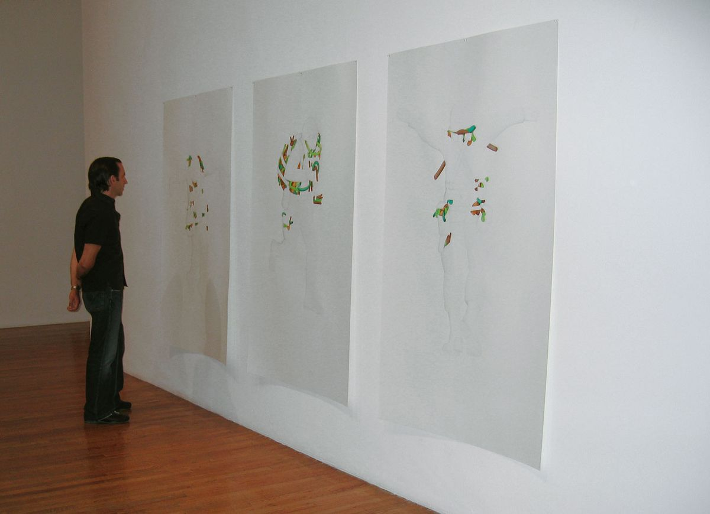
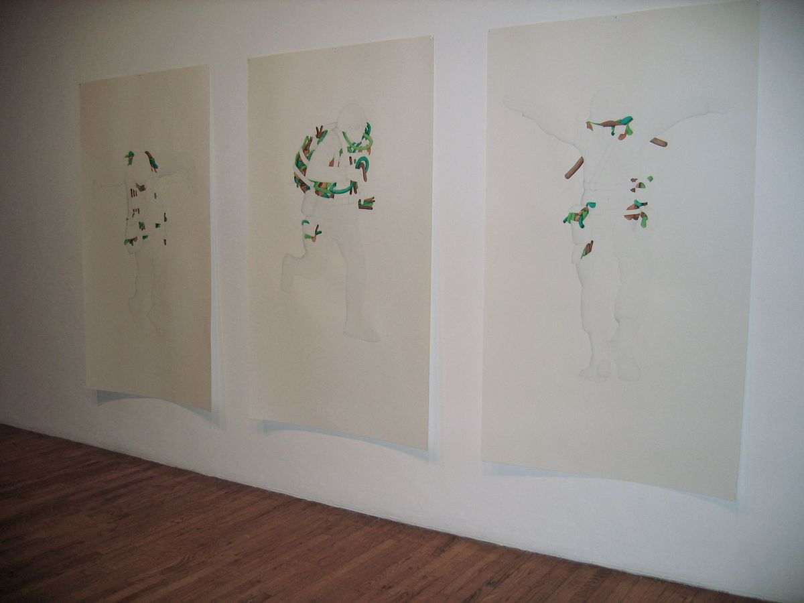
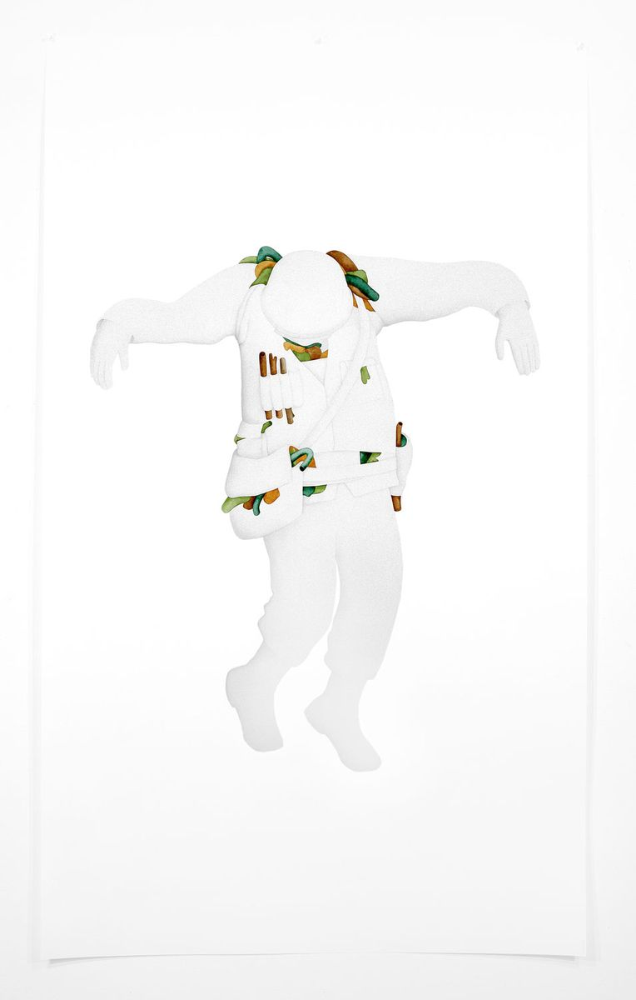
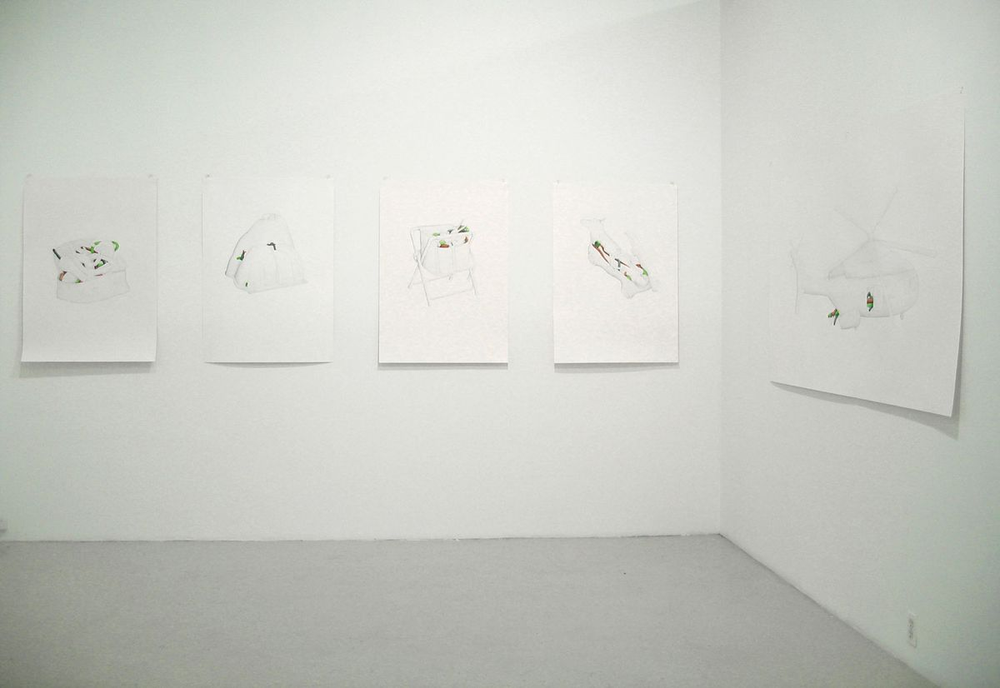
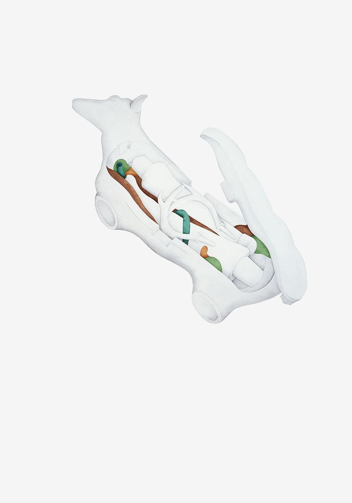
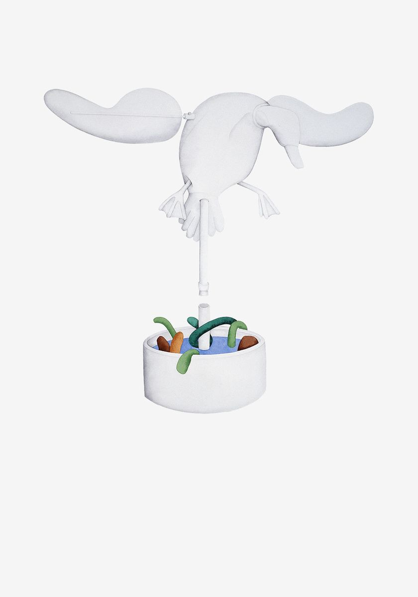
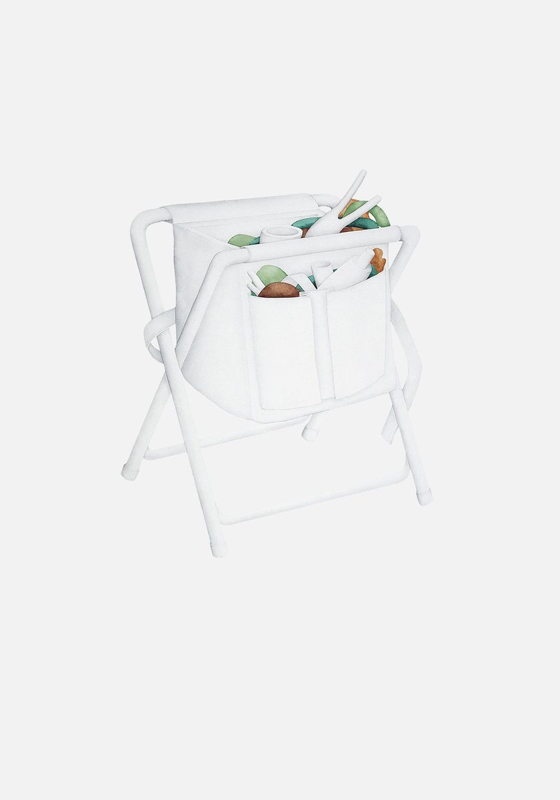
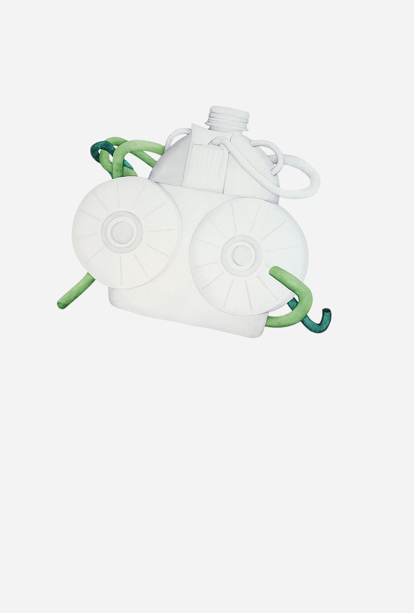
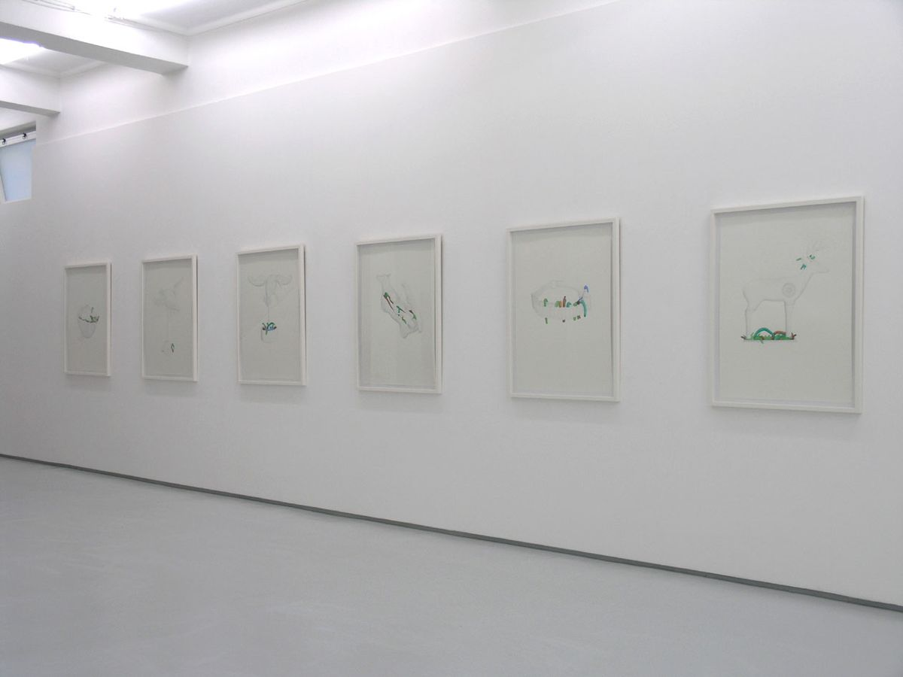
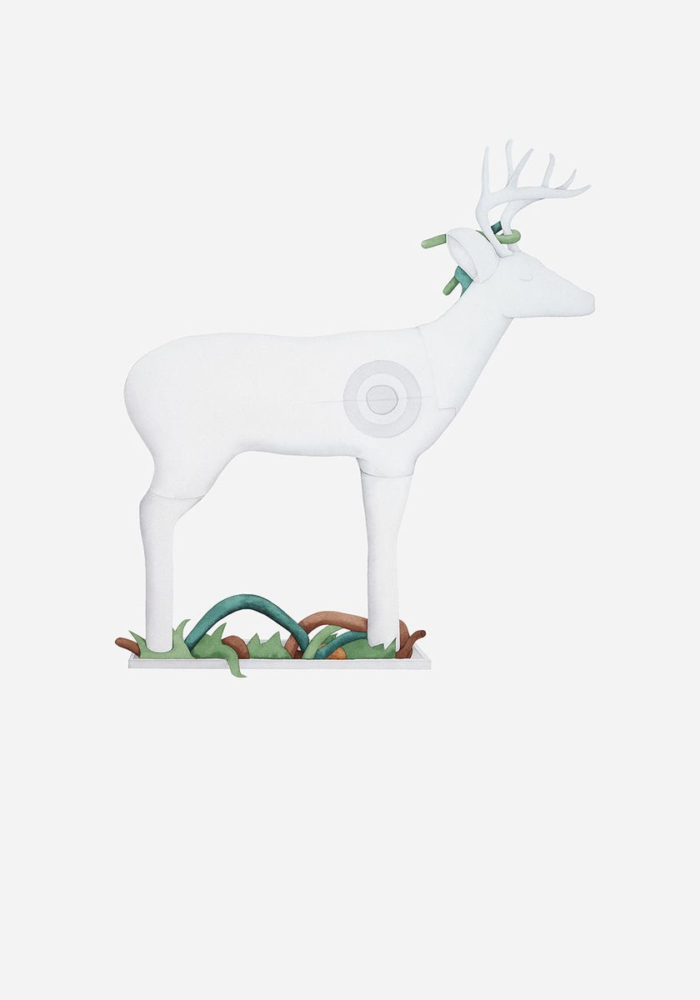
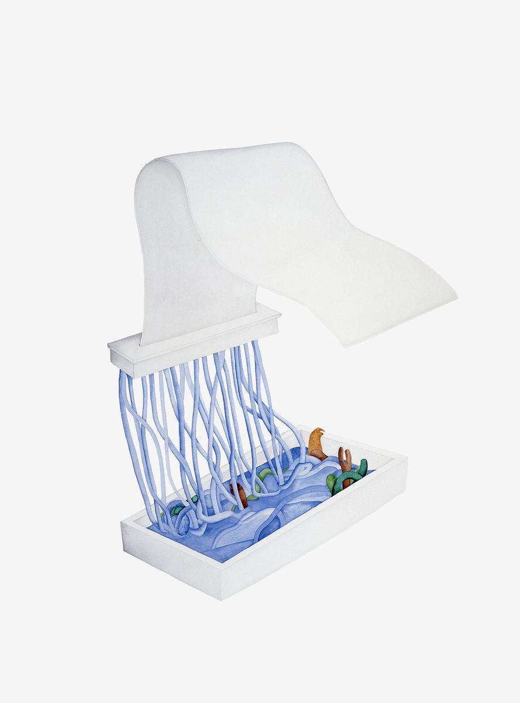
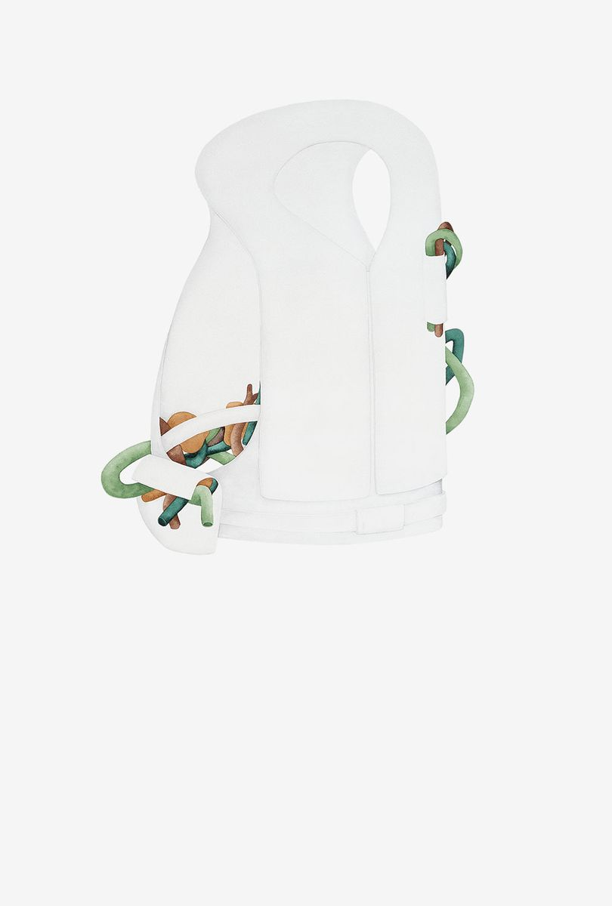